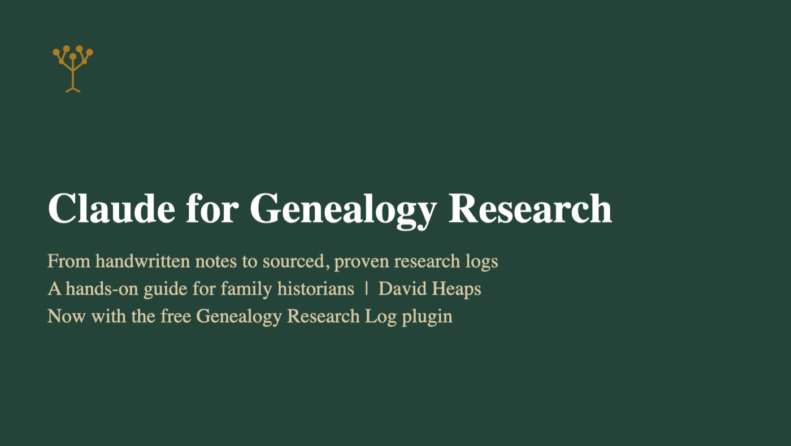

Step 2 · Class · Lehi FamilySearch Center, Utah
Claude for Genealogy Research
Teaching family historians how AI can make their sources more accurate, and find far more of them.
I created this class and introduced it at the Lehi FamilySearch Center in Lehi, Utah. My goal is to show family historians how AI can greatly improve both the accuracy and the number of sources behind their research, without giving up control of their tree. It covers choosing a plan, setting up a research Project, a six-step workflow for each ancestor, and how to weigh evidence as Proven, Probable, or Possible.
The examples come from my own research. One case study follows Peter Niles (born 1755): the review found a son wrongly attached to him, a birth date that couldn't be right, and a pension payment recorded as military service. It also turned up an unread 16-page Revolutionary War pension file.
The class ends with a hands-on exercise. Each person researches one ancestor of their own and makes one checked fix in FamilySearch.
